Эксперимент 1
Португальская речь
Зафиксируйте первое впечатление до раскрытия источника.
Как дать AI-персонажу характер, восприимчивость и эмоциональную память — вместо реакции только на последнюю реплику.
Эмоциональная метка описывает отдельную реплику. Состояние агента описывает продолжающуюся внутреннюю реакцию: что уже произошло с персонажем, что действует на него сейчас и с каким контекстом он встретит следующее событие.
Пофрагментный классификатор без состояния рассматривает реплику отдельно и присваивает ей готовую метку: «страх», «радость», «гнев» или «печаль». После этого его работа заканчивается. Такая метка не объясняет, из каких данных получен вывод, что стало причиной реакции, как она изменялась и исчезли ли её последствия.
Для живого агента эмоция должна быть не подписью под последней репликой, а частью продолжающегося процесса. Новое событие воздействует на уже существующее current_state, а получившееся состояние становится контекстом следующего шага.
Пофрагментный классификатор выбирает один или несколько готовых классов, но не передаёт состояние в следующий шаг.
Каждое событие изменяет предыдущее состояние, а последствия влияют на следующие реакции.
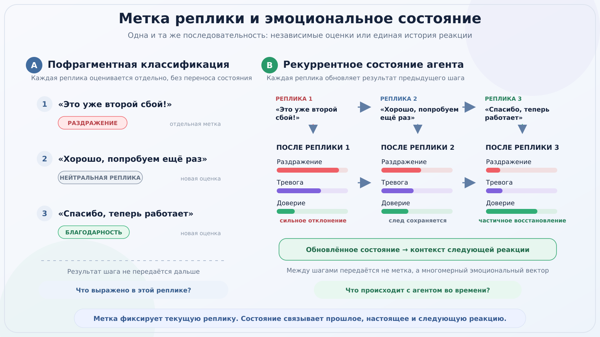
Как читать: пофрагментный классификатор определяет, что выражено в каждой реплике, но не переносит результат дальше. Рекуррентная модель обновляет эмоциональный вектор агента после каждого события и передаёт его в следующий шаг как контекст будущей реакции.
Когда человек говорит, мы одновременно получаем два разных вида информации. Слова сообщают, что произошло, к чему относится реакция и какой смысл имеет реплика. Звучание сообщает, как эта реплика была произнесена: как менялся основной тон, насколько устойчивым был голос, с какой скоростью человек говорил и насколько сильно его голос отличался от текущей речи агента.
Эти источники нельзя считать равнозначными. Страх, радость, гнев, любовь или разочарование возникают на смысловом уровне. В звуковой волне нет объекта страха, причины радости или содержания признания в любви. Поэтому аудио не содержит готовых эмоциональных классов. Оно содержит только измеримые физические признаки речи.
В модели используются три направленных акустических признака и один общий масштаб воздействия:
| Признак | Что он описывает | Чего он не означает |
|---|---|---|
| Активность | Относительный уровень основного тона голоса и направление его изменения в пределах речи. | Не является готовой радостью, страхом, гневом или возбуждением. |
| Тревожность | Относительную выраженность колебаний основного тона и акустическую неустойчивость голоса. | Не является психологическим диагнозом и сама по себе не доказывает тревогу человека. |
| Темп | Относительную скорость речи с учётом её плотности, длительностей и пауз. | Не определяет эмоцию: быстрая и медленная речь встречаются в разных состояниях. |
| Сила воздействия | Отклонение амплитуды или энергии речи и направление её изменения. | Не выбирает эмоциональный класс, а масштабирует совокупное влияние остальных признаков. |
После сравнения и нормализации активность, тревожность и темп становятся оценками того, в каком направлении и насколько следует скорректировать состояние агента. Эти низкоуровневые акустические воздействия называются прото-эмоциями. Это не сокращённый набор «простых эмоций», а нижний акустический уровень, который ещё не имеет самостоятельного эмоционального смысла.
Каждый признак является только частичным. Активность может участвовать в выражении радости, страха, гнева, нервозности или возбуждения. Колебания тона могут сопровождать несколько разных состояний. Темп также не принадлежит одной эмоции. Признаки приобретают значение только в совокупности: они могут усиливать друг друга, действовать в противоположных направлениях или взаимно компенсироваться.
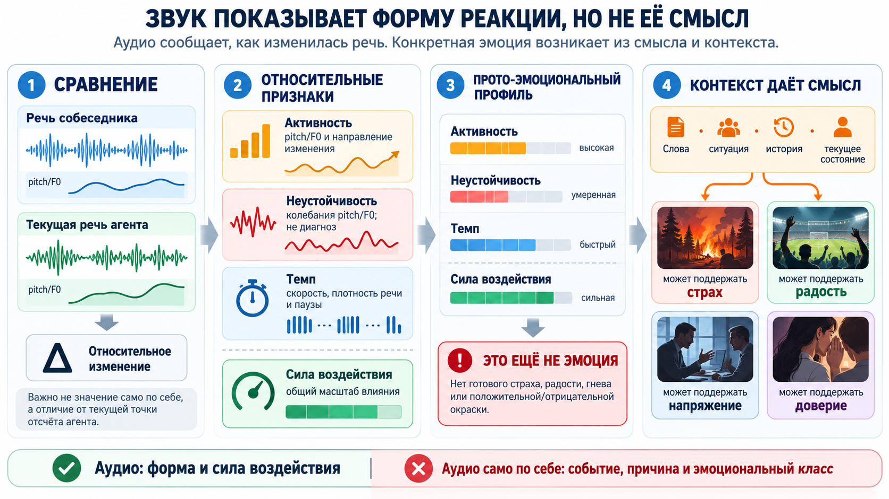
Как читать: интенсивность, скорость и изменения тона позволяют измерить прото-эмоциональную основу. Название эмоции требует смыслового анализа текста.
Связь между акустической основой и эмоциями устроена как «многие ко многим». Один и тот же паттерн участвует в выражении разных эмоций, а одна эмоция может проявляться акустически противоположными способами.
Шёпот может сопровождать страх, радость, признание в любви, доверительность или попытку не привлечь внимание. Крик может сопровождать страх, гнев, радость, спортивное ликование или предупреждение.
Страх может выражаться шёпотом, криком, ускоренной нервной речью, медленной подавленной речью или внешне спокойным голосом.
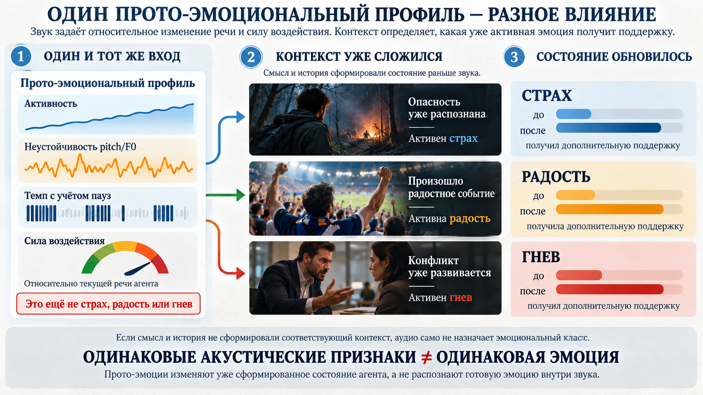
Как читать: акустические признаки не принадлежат одному классу. Их значение определяется не самим звуком, а эмоциональным контекстом, который уже сложился у агента.
Именно поэтому audio-only классификаторы, включая подходы вроде emotion2vec, не работают как распознаватели эмоций. Они пытаются получить из акустики смысловые категории, которых в ней нет. Модель может выучить актёрскую манеру чтения, особенности диктора, языка, микрофона, сценария записи или разметки конкретного корпуса, но эти корреляции не являются распознанной эмоцией.
Высокая метрика на таком бенчмарке не доказывает понимание страха, радости или гнева. Если набор данных позволяет угадывать метку по побочным акустическим закономерностям, это характеризует устройство набора данных, а не способность определить эмоцию человека. Нельзя установить, что именно распознано: состояние, постановочная подача, особенности корпуса или случайная корреляция.
text_emotions формирует не одну окончательную метку, а распределение эмоций верхнего уровня по смыслу текста. Даже если одна эмоция доминирует, другие обычно сохраняются с небольшими весами. Акустический канал не заменяет это распределение и не добавляет в него независимую аудиометку. Он может только усилить или подавить уже существующие эмоциональные возможности.
Роль контекста выполняет current_state, существующее у агента в момент поступления аудио. Если в нём уже развивается страх, активность, тревожность и темп могут увеличить страх. Если в другом состоянии уже развивается радость, похожее акустическое воздействие может усилить радость. Сам звук не выбирает между ними, не создаёт эмоциональную причину и не порождает из ничего отсутствующий смысловой класс.
Пронзительный крик в джунглях может усилить уже возникший страх перед неизвестной угрозой. Такой же по интенсивности крик на футбольном стадионе может усилить радость после гола. Различие находится не в самостоятельной акустической метке «страх» или «радость», а в состоянии и истории, с которыми агент встретил сигнал.
Мы не воспринимаем каждое новое событие независимо от предыдущего опыта. Мозг использует уже сложившееся представление о происходящем и интерпретирует новые признаки внутри этого контекста. Это относится не только к слуху, но и к зрению, смыслу речи и другим источникам информации.
Один и тот же объект, звук или жест может приобретать различное эмоциональное значение в разных обстоятельствах. Слон может вызывать страх при неожиданной встрече в дикой природе и восхищение при наблюдении в безопасной обстановке. Повышенный голос может сопровождать как опасность, так и радостное возбуждение.
Поэтому признаки не следует рассматривать как готовые эмоциональные метки. Они участвуют в формировании и изменении контекстной интерпретации: могут поддерживать существующее представление, ослаблять его или способствовать появлению другого.
В предлагаемой модели этот общий принцип имеет конкретную реализацию: смысл текста формирует распределение эмоциональных возможностей, предыдущее состояние сохраняет историю реакции, а акустические признаки усиливают или ослабляют уже активные компоненты. Новое состояние становится контекстом следующего события.
То же видно на фразе «Я тебя люблю». По смыслу любовь получит высокий вес, а страх может остаться слабой, но ненулевой возможностью. Если реплика звучит угрожающе и агент уже находится в контексте страха, акустические признаки способны усилить именно страх. Если звучание не поддерживает заявленное чувство, любовь не получает ожидаемого акустического подтверждения. Это объясняет известную фразу Константина Станиславского «Не верю!»: зритель слышит смысл слов, но не обнаруживает в исполнении согласованной с ним формы реакции. Для такого эффекта не требуется вводить отдельный искусственный показатель противоречия.
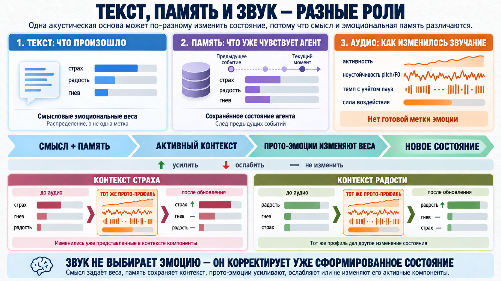
Как читать: текст формирует смысловые эмоциональные веса, а сохранённое current_state задаёт контекст. Прото-эмоции усиливают или ослабляют активные компоненты, но не создают новый эмоциональный класс.
| Доступные данные | Что можно получить | Граница |
|---|---|---|
| Только текст | text_emotions: смысловое распределение эмоций | Неизвестна фактическая акустическая форма речи |
| Только аудио | Акустические признаки и прото-эмоции | Нельзя определить эмоцию, её знак и причину |
| Аудио и текущее состояние | Усиление или ослабление уже активных эмоциональных компонентов | Аудио не создаёт отсутствующую смысловую эмоцию |
| Все входы модели | Новое собственное состояние агента | Это состояние агента, а не диагноз собеседника |
В модели нет абсолютных понятий «высокий голос», «низкий голос», «быстрая речь» или «медленная речь». Есть признаки текущей речи собеседника и признаки предыдущей речи агента. Прото-эмоции определяются их разностью.
Например, если средний основной тон предыдущей речи агента был около 180 Гц, значение 300 Гц находится выше его текущей точки отсчёта, а 120 Гц — ниже. Если агент на предыдущем шаге говорил около 400 Гц, оба значения окажутся ниже его текущего уровня. Поэтому модель оценивает не звук сам по себе, а направление изменения относительно фактической речи агента.
На первом шаге используется заранее подготовленный нейтральный образец голоса агента. После каждого озвученного ответа система снова извлекает признаки уже из реально сгенерированного аудио. Они становятся новой точкой отсчёта для следующей реплики собеседника.
Сгенерированный голос не меняет состояние повторно на том же шаге. Эмоциональное решение уже принято при обновлении current_state. Новое аудио нужно только как следующая акустическая точка отсчёта — иначе одно и то же влияние было бы учтено дважды.
Даже смысловая оценка текста не должна автоматически становиться состоянием персонажа. Раздражённый собеседник не обязан делать агента раздражённым. Входное событие проходит через характер, восприимчивость, ответ агента и уже накопленное состояние.
Замечает конфликтный смысл, но слабо отклоняется от равновесия и быстро восстанавливается.
На раздражение собеседника может ответить усилением заботы, а не раздражения.
Может преобразовать угрозу в страх и долго сохранять настороженность.
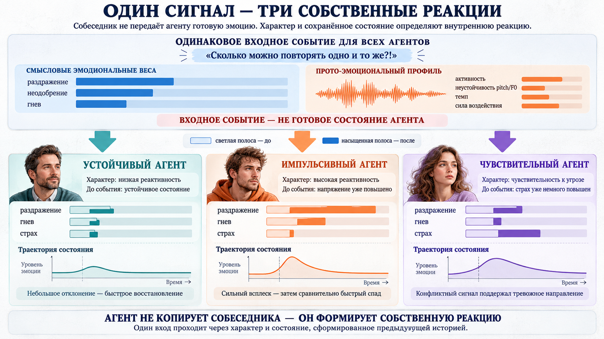
Как читать: один и тот же вход проходит через индивидуальные свойства и историю персонажа, поэтому разные агенты получают разные внутренние состояния.
После конфликта состояние не исчезает вместе с последним словом. Следующая спокойная реплика может ослабить последствия, но не обязана мгновенно их обнулить. Результат предыдущего шага становится контекстом следующего: новое событие воздействует не на пустое место, а на уже сформированный current_state.
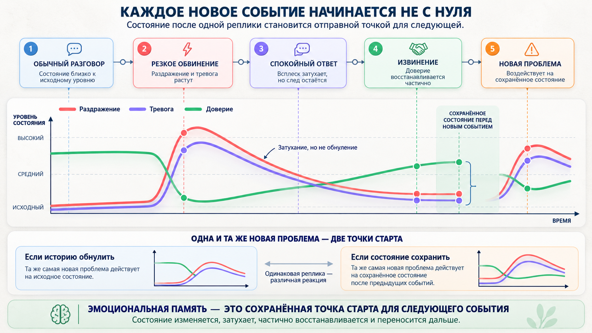
Как читать: обвинение создаёт отклонение, спокойный ответ и извинение постепенно его ослабляют, но каждое новое событие действует на сохранённое состояние.
Характер задаёт естественный фон, восприимчивость и скорость восстановления. Его структура и эмоциональные веса подробнее раскрыты в статье «Коммуникационные стили в агентских системах». Здесь характер используется как устойчивая основа реакции.
Поэтому одно резкое обвинение создаёт разные траектории: устойчивый персонаж отклонится слабо и быстро восстановится; импульсивный переживёт сильный, но короткий всплеск; чувствительный дольше сохранит тревожное ожидание. Различие относится не только к амплитуде и скорости восстановления, но и к составу эмоционального вектора: у одного сильнее изменится раздражение, у другого — тревога или доверие.
| Обычный анализ эмоций | Модель эмоционального состояния агента |
|---|---|
| Пытается получить готовую эмоцию непосредственно из звука | Извлекает из звука только измеримые признаки и прото-эмоции |
| Принимает метки датасета за распознанное состояние человека | Отделяет акустические корреляции от эмоций верхнего уровня |
| Назначает положительный или отрицательный класс по голосу | Не приписывает акустике валентность или смысловую эмоцию |
| Рассматривает каждую реплику отдельно | Сохраняет current_state между событиями |
| Добавляет аудиометку как самостоятельную эмоцию | Применяет прото-эмоции только через существующий эмоциональный контекст |
| Формирует отчёт о разговоре | Использует состояние для следующей реакции продукта |
text_emotionscurrent_state → контекст применения прото-эмоцийcurrent_state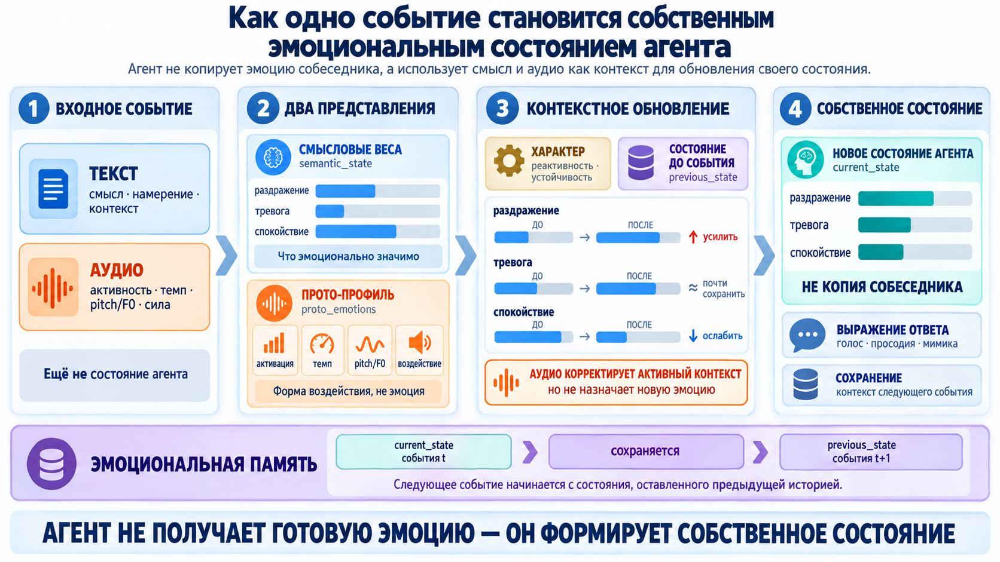
Как читать: текст формирует эмоции смыслового уровня. Аудио формирует только прото-эмоции, которые модифицируют активный контекст. Характер, ответ и память превращают входное событие в собственное состояние агента.
text_emotions, предыдущее состояние — контекст, а характер и память формируют продолжающуюся эмоциональную траекторию агента.Какие продуктовые возможности дают непрерывность состояния, разные характеры и корректное использование акустики.
Как вычислять признаки, контекстно применять прото-эмоции, обновлять состояние и контролировать устойчивость.
Не отчёт с эмоциональными метками после разговора, а управляемую траекторию: система видит накопление и восстановление реакции, персонаж помнит последствия, а следующая стратегия учитывает его текущее состояние.
Отчёт описывает разговор после завершения. Адаптивный продукт отслеживает состояние во время взаимодействия, меняет действие и проверяет, помогло ли оно.
Обычная аналитика чаще отвечает после завершения разговора: какие эмоциональные метки встречались в его фрагментах. Рекуррентное состояние используется во время взаимодействия. Оно показывает направление изменений: реакция усиливается, сохраняется или действительно ослабевает после действия системы.
Продукт при этом не заявляет, что достоверно прочитал психику человека. Он хранит состояние собственного агента, сформированное смыслом текста, характером, предыдущими событиями и доступными акустическими признаками.
| Обычная аналитика | Рекуррентное состояние | Продуктовый эффект |
|---|---|---|
| Каждый фрагмент оценивается отдельно | Новое событие продолжает предыдущую траекторию | Персонаж ведёт себя последовательно |
| Результат — отчёт после события | Состояние доступно во время взаимодействия | Стратегию можно изменить до завершения диалога |
| Одинаковая реплика даёт одинаковую реакцию | Характер и история меняют восприимчивость | Появляются действительно разные роли |
На рынке существуют модели, которые получают короткий фрагмент речи и возвращают готовую эмоциональную метку: «радость», «страх», «гнев», «грусть», «нейтральное состояние» или более широкий список эмоций. К этому классу относятся, например, GigaAM-Emo, Aniemore, EmoNet-Voice и другие системы распознавания эмоций по речи.
Для бизнеса такое решение выглядит привлекательно: достаточно передать модели запись клиента, ученика или пользователя — и получить понятный ответ: «клиент раздражён», «ученик испытывает страх», «пользователь настроен положительно». Затем продукт может автоматически изменить сценарий, подключить оператора, упростить задание или выбрать другую стратегию ответа.
Неоднозначная речь превращается в готовую метку, а метка — в автоматическое действие. Если исходное толкование неверно, продукт реагирует не на человека, а на вывод классификатора.
Поэтому аудиоклассификатор, который выдаёт готовую эмоцию непосредственно по записи, не решает заявленную задачу. Он может хорошо воспроизводить разметку своего датасета, но это не означает, что он достоверно распознаёт эмоциональное состояние человека.
В лекции «Эволюция понимания, или Почему люди читают опой» лингвист Светлана Бурлак приводит демонстрацию из лекций когнитивного психолога Марии Фаликман. Зрителям на короткое время показывают изображение женщины, окружённой множеством небольших существ. Типичный ответ — «бабушка кормит голубей». Но на изображении вовсе не голуби, а динозавры размером с голубей.
Почему мы видим привычных птиц вместо совершенно необычных существ? Мозг успевает распознать несколько общих признаков: женщину, множество маленьких силуэтов вокруг неё и знакомую ситуацию кормления животных. Этого оказывается достаточно, чтобы сформировать правдоподобную модель происходящего.
Дальнейшее восприятие уже направляется этой моделью. Вместо внимательного изучения каждого объекта мы узнаём знакомую ситуацию и достраиваем недостающую информацию из предыдущего опыта. Мы воспринимаем не только то, что находится перед нами, но и то, что ожидаем увидеть.
Этот механизм связан с перцептивным циклом Ульрика Найссера: существующая схема направляет исследование реальности, новые наблюдения уточняют или изменяют её, а обновлённая схема влияет на дальнейшее восприятие.
Аналогичный принцип действует при интерпретации эмоциональных сигналов. Акустические, визуальные и смысловые признаки не имеют универсального эмоционального значения. Они взаимодействуют с текущим контекстом, поддерживая, ослабляя или изменяя возможные интерпретации. Так, один и тот же слон может восприниматься как опасность или как объект восхищения; крик или изменение голоса не содержат однозначной эмоциональной метки без понимания обстоятельств.
Резкий звук в лесу может вызвать страх, потому что текущее состояние человека уже связано с ожиданием неизвестной опасности. Такой же резкий переход в музыкальном произведении может, наоборот, усилить восторг или радостное возбуждение.
Крик на футбольном стадионе может означать, что команда забила гол. Похожий крик ночью в пустом доме будет воспринят совершенно иначе. Шёпот может сопровождать страх, интимное признание, заботу, угрозу или попытку не разбудить ребёнка. Ускоренная речь может возникнуть из-за радости, тревоги, гнева, увлечённости темой или просто быть привычной особенностью говорящего.
Похожая акустическая основа может усиливать страх в опасной обстановке, радость на стадионе или возбуждение на рок-концерте. Значение возникает из контекста.
Во всех этих случаях акустический сигнал содержит измеримые изменения основного тона, его направления и колебаний, темпа, пауз и энергии речи. Но сами по себе они не сообщают, радуется человек или боится. Они показывают, как изменилось звучание, но не объясняют причину изменения.
Если человек слышит эмоционально насыщенную речь на совершенно незнакомом языке и не видит происходящего, он может заметить ускорение, повышение тона, колебания, резкость или, наоборот, замедление и затухание речи. Но он не может достоверно установить, обсуждают ли собеседники радостную новость, ссорятся, смотрят спортивный матч или разыгрывают театральную сцену.
Любое назначение конкретной эмоции в такой ситуации будет догадкой. Если слушатель всё же угадает, это не означает, что эмоция находилась в акустике как готовая метка: на решение могли повлиять знакомый шаблон произношения, культурная ассоциация, отдельное понятное слово, фоновые звуки или случайное совпадение.
Именно поэтому акустические признаки необходимо отделять от смысловых эмоций. Звук может изменить или усилить реакцию, но для определения её значения необходим контекст.
Посмотрите оба видео, не открывая пояснение. Понимать язык не обязательно. После каждого фрагмента выберите, что, по вашему мнению, происходит. Не пытайтесь определить страну — оцените ситуацию, которую вы воспринимаете.
Зафиксируйте первое впечатление до раскрытия источника.
Сравните свой ответ с первым примером, а затем откройте пояснение.
Что показано: историческое выступление Луиса Инасиу Лулы да Силвы перед рабочими 1 мая 1979 года. Эта сцена действительно связана с забастовочным движением, социальной несправедливостью и протестом.
Что звучит: фрагмент стендап-выступления Витора Сарро о различиях между португальским языком и его бразильским вариантом. Это юмористический материал, не относящийся к политическому выступлению на экране.
Открыть исходное выступление Лулы 1 мая 1979 года
Открыть исходное выступление Витора Сарро
Что показано: африканские болельщики радуются победе сборной Бразилии. Исходный звук праздничного видео был удалён.
Что звучит: речь из военного материала о продвижении повстанцев и боях в Заире. Фрагменты с выстрелами были удалены, чтобы фон не выдавал военную ситуацию простой звуковой подсказкой.
Открыть исходное видео болельщиков
Открыть исходный военный материал
Что произошло: в обоих примерах слушатель слышал настоящую речь, но получал ложный визуальный контекст. Если язык незнаком, изображение начинает подсказывать предполагаемый смысл. Акустика позволяет заметить активность, темп, изменения громкости и колебания голоса, но сама по себе не сообщает, является происходящее шуткой, протестом, праздником или вооружённым конфликтом.
Почему это важно для продукта: если система назначает готовую эмоциональную метку непосредственно по такому аудио, она рискует автоматизировать ту же ошибку, которую только что мог совершить слушатель.
Этот медиатест позволяет непосредственно почувствовать влияние внешнего контекста. Более строгий контролируемый вариант должен показывать один и тот же аудиофрагмент с двумя противоположными видеорядами, чтобы изменялся только визуальный контекст.
Модели распознавания эмоций обучаются на датасетах, в которых аудиофрагментам заранее назначены эмоциональные метки. Например, в датасете DUSHA используются классы положительного состояния, грусти, гнева или раздражения, нейтрального состояния и других записей.
На первый взгляд кажется, что если несколько аннотаторов прослушали запись и согласились с меткой, то эта эмоция действительно присутствует в аудио. Однако аннотатор слышит не набор независимых физических параметров. Он слышит понятную речь и автоматически интерпретирует её смысл.
В постановочной части DUSHA исходные фразы сначала оценивались текстовым классификатором. Затем фразе назначалась предполагаемая эмоциональная категория, а исполнителю сообщали, с какой эмоцией следует произнести текст. Аннотаторы не видели письменную расшифровку, но понимали произнесённые русские слова. Следовательно, смысловой канал не исчезал: он находился внутри самой речи.
В части датасета, построенной на подкастах, русскоязычные аннотаторы также слушали короткие фрагменты понятной им речи. Они могли одновременно учитывать значение слов, описываемую ситуацию, интонацию, особенности голоса и манеру произнесения. В результате метка описывает совокупное впечатление аннотатора, а не изолированное содержание акустического сигнала.
Аннотатор слышит смысл, голос, манеру речи и фон, но датасет сохраняет упрощённую пару WAV → эмоция. Высокое совпадение с такой меткой не доказывает распознавание эмоции из акустики.
Даже если системе формально передаётся только WAV-файл, это не означает, что внутри она использует исключительно акустические признаки. Модели семейств wav2vec 2.0, HuBERT и похожие архитектуры обучаются представлять структуру речи. При настройке на эмоциональном датасете они могут частично усвоить содержащуюся в аудио лингвистическую информацию.
В таком случае одна модель смешивает несколько разных задач: частично распознаёт фонетическую и лексическую структуру, связывает услышанные слова с метками датасета, учитывает особенности дикторов и записи, а также использует акустическую форму произнесения. Исследования таких моделей отдельно показывают, что успешное предсказание валентности может опираться на неявно усвоенную лингвистическую информацию.
Для исследовательского сравнения совпадения с разметкой может быть достаточно. Для продукта, который принимает решения о реальном человеке, этого недостаточно: неизвестно, что именно распознала модель и сохранится ли эта закономерность для другого языка, голоса, микрофона или сценария.
Большинство таких классификаторов оценивают отдельную реплику или несколько секунд речи. Но эмоциональное значение фрагмента может находиться не в нём самом, а в предыдущей истории.
Слово «нет» может быть спокойным отказом, испуганной реакцией, раздражённым завершением разговора, шутливым возражением или частью переговорной стратегии. Даже смысл и звучание одного «нет» не позволяют восстановить состояние разговора. Необходимо знать, что происходило раньше и какое эмоциональное состояние уже сформировалось к моменту реплики.
Если система анализирует каждый фрагмент независимо, она каждый раз начинает с нуля. Человек воспринимает речь иначе: предыдущие события продолжают влиять на интерпретацию последующих.
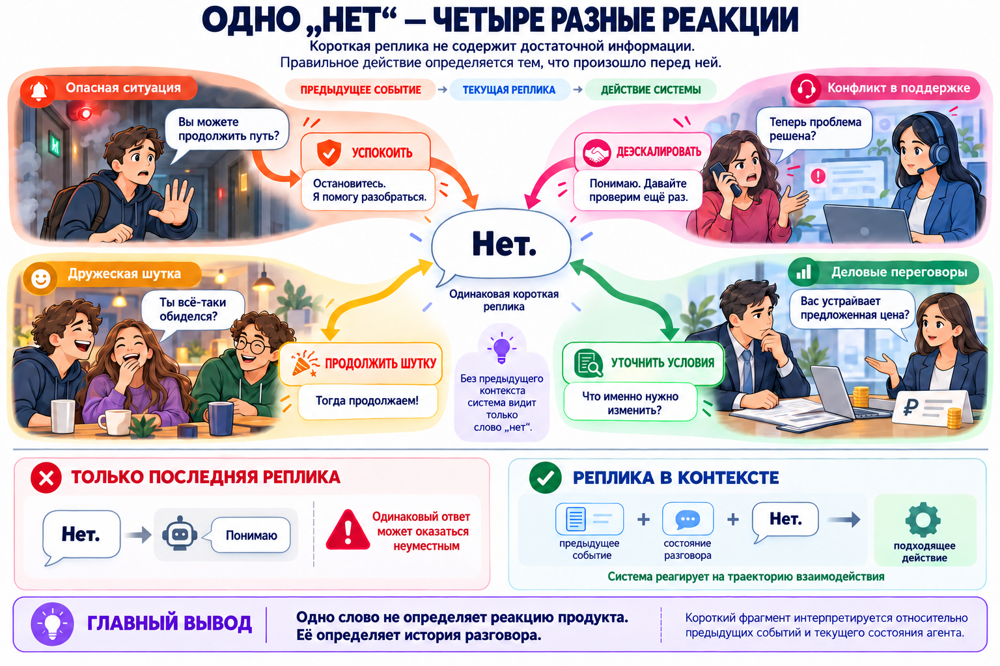
Одинаковая короткая реплика требует разных действий после опасности, шутки, конфликта или переговоров. Без предыдущих событий система теряет причину реакции.
Следующий медиатест позволяет сравнить две обработанные фразы до контекста, внутри сцены страха и внутри сцены радости. Прослушивайте основные фрагменты строго по порядку: последовательность является частью демонстрации.
Сначала прослушайте две контрольные фразы, а затем три основных видео. До завершения последовательности не открывайте объяснение устройства записей.
Прослушайте каждую обработанную фразу один раз и зафиксируйте первое впечатление. Эти записи служат точкой сравнения, но не абсолютным «нулевым состоянием»: даже порядок прослушивания способен повлиять на следующую интерпретацию.
Далее не возвращайтесь к контрольным фразам до окончания трёх основных шагов.
Посмотрите первый фрагмент целиком. Обратите внимание на то, как воспринимается завершающая его фраза. Пока не пытайтесь объяснить устройство записи.
Сразу после первого видео прослушайте этот фрагмент. Праздничного видеоряда здесь нет, а фон сохраняет связь с предыдущей опасной сценой.
Теперь прослушайте обработанную фразу внутри другой сцены. Сравните её с предыдущим шагом и с контрольной записью.
Главный результат: конкретная эмоция не находилась внутри акустического шаблона как готовая метка. Акустические признаки влияли на восприятие, но значение этого влияния определялось словами, окружающей сценой и уже сформированным состоянием слушателя.
Граница демонстрации: второй ролик сохраняет фоновые сигналы страха. Поэтому он показывает непрерывность контекста, но сам по себе не отделяет остаточное внутреннее состояние от продолжающегося внешнего воздействия. Для изоляции чистого эффекта памяти потребовался бы дополнительный вариант той же фразы без фоновых звуков, воспроизводимый сразу после пожара.
Предыдущий эксперимент показывал результат обработки. Следующие два видео демонстрируют сам процесс: исходную синтезированную фразу, её выравнивание и версию после наложения общего целевого шаблона.
Praat здесь используется как средство наблюдения, а не как декоративный фон. При просмотре достаточно следить за тремя элементами:
Исходная сгенерированная фраза → выровненный механический голос → результат после наложения целевого шаблона.
Те же этапы обработки для фразы с другим смыслом и другой фонетической структурой.
Важно: общим стал шаблон выбранных просодических признаков, а не весь физический аудиосигнал. Слова, фонемы, форманты и длительность фраз остались разными. Praat показывает процесс управления выбранными характеристиками, а не полную идентичность двух записей.
Наиболее показательный эффект возникает во втором шаге. После сцены пожара звучит фраза «я так рад» без праздничного видеоряда, но с фоновыми звуками, сохраняющими связь с опасной ситуацией. Буквальный смысл сообщает о радости, однако окружающая сцена и уже сформированное состояние слушателя эту радость не подтверждают.
Мозг не обязан разрешать такую нестыковку единственным способом и слышать именно страх. В зависимости от текущего состояния, ожиданий и предшествующего опыта фраза может восприниматься как испуганная, как вопрос вместо утверждения, как неправильно услышанные слова — например, бессмысленное «я-то крат» — или даже как другая фраза вроде «я домкрат». Общим остаётся не конкретная эмоциональная метка, а ощущение, что естественная радость здесь не складывается и услышанному требуется другое объяснение.
Восприятие может пересматривать не только предполагаемое состояние говорящего, но и интонацию, тип высказывания и сами распознанные слова. Человек словно проверяет гипотезу: «Может быть, я услышал неправильно?» Поэтому один физический сигнал способен порождать несколько интерпретаций, а выбранный вариант зависит от контекста, который мозг уже удерживает.
Эффект не обязан оставаться одинаковым при повторных прослушиваниях. Чем чаще человек слышит запись, чем подробнее читает объяснение эксперимента и чем сильнее ожидает подвоха, тем слабее первоначальная нестыковка. Кроме того, мозг запоминает фразу в других контекстах, и более сильная или более свежая интерпретация начинает влиять на следующее прослушивание. Поэтому разные читатели могут услышать разные варианты, а один человек — изменить восприятие одной и той же записи со временем.
Демонстрация не утверждает, что результат полностью объясняется одним остаточным эффектом памяти: во втором ролике продолжают звучать фоновые сигналы страха. Для продукта важнее другое обстоятельство — граница аудиофрагмента не является границей эмоционального и смыслового контекста. Система не должна обнулять состояние и назначать каждой следующей фразе готовую метку отдельно от предыдущей ситуации.
Этот эффект можно сравнить с известной оптической иллюзией вращающейся балерины. Один и тот же стимул допускает несколько интерпретаций. После выбора одного направления мозг некоторое время удерживает его, но внимание, ожидание или новый контекст могут переключить восприятие. Аналогия относится не к обязательному восприятию страха, а к зависимости результата от уже выбранной интерпретации.
Это аналогия общего принципа восприятия, а не утверждение о полном совпадении физиологических механизмов зрительной и слуховой иллюзий.
Физический стимул остаётся тем же, но воспринимаемое направление вращения может измениться. Эта иллюзия показывает, как уже выбранная интерпретация некоторое время направляет последующее восприятие.
После обработки фразы исследовались в программе Praat. Анализ формантной и спектральной структуры показал, что некоторые компоненты, связанные с первоначальным звонким эмоциональным звучанием, были удалены или существенно искажены. Тем не менее при прослушивании человек мог продолжать слышать знакомое качество голоса, которого уже не было в физическом сигнале в исходном виде.
Мозг не добавляет частоты обратно в аудиофайл. Он достраивает целостный воспринимаемый образ речи, используя знакомые слова, ожидаемое произношение, предшествующую сцену, предполагаемое состояние говорящего и накопленный слуховой опыт.
Поэтому физический сигнал и воспринимаемое звучание — не одно и то же. Этот механизм помогает понимать речь в шуме, при плохом качестве связи, частичной потере частот и искажении отдельных звуков. Недостающие элементы не появляются в записи, но могут восстанавливаться на уровне восприятия.
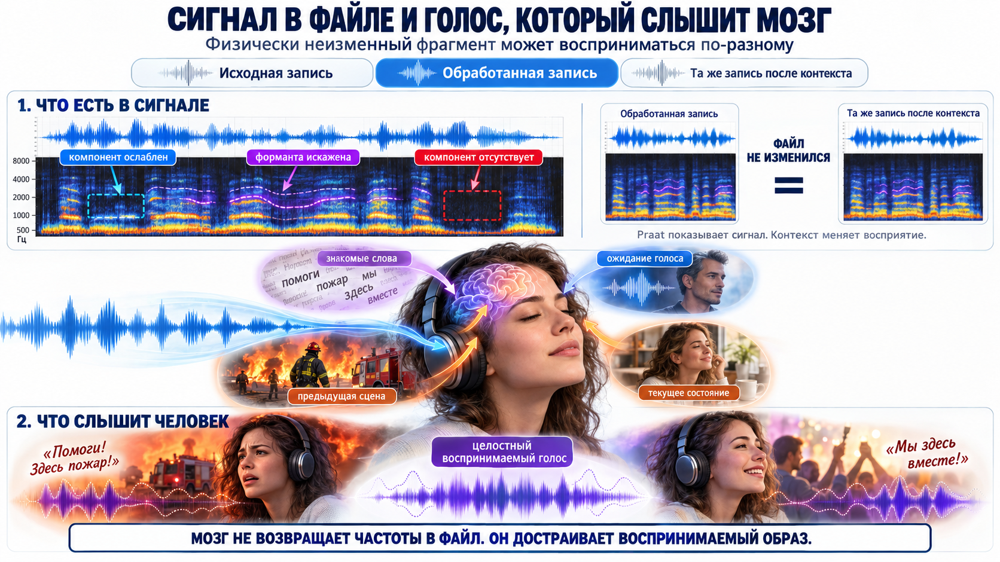
Praat показывает, какие компоненты действительно присутствуют в записи. Слушатель объединяет сигнал со словами, ожиданиями и предыдущей сценой, достраивая целостный образ.
Для аудиоклассификатора это создаёт ещё одну проблему: человеческая метка может описывать не только то, что физически находилось в аудио, но и то, что аннотатор достроил благодаря понятным словам и контексту. Затем модель обучается считать это свойством самого звукового фрагмента.
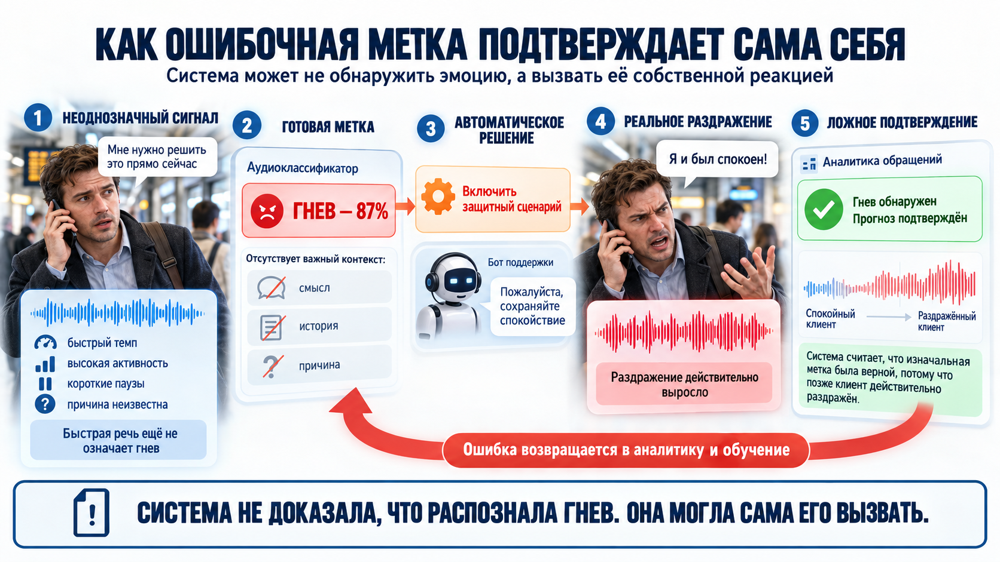
Классификатор объявляет быструю речь гневом, продукт отвечает защитным тоном, клиент действительно раздражается, а аналитика ошибочно считает это подтверждением исходной метки.
| Применение | Возможная ошибка | Последствие |
|---|---|---|
| Служба поддержки | Энергичная или быстрая речь классифицирована как гнев | Клиента без необходимости переводят на эскалацию или отвечают защитным тоном |
| Контроль операторов | Индивидуальная манера речи принята за негативное состояние | Сотрудник получает несправедливую оценку качества |
| Обучающий агент | Ускорение и колебания голоса объявлены фрустрацией | Задание преждевременно упрощается, хотя ученик был увлечён |
| Продажи | Короткое «нет» получает готовую эмоциональную метку | Система выбирает неверную стратегию убеждения |
| Социальный робот | Акустический паттерн выдаётся за доказанный страх или раздражение | Робот отвечает неуместно и вызывает дополнительное напряжение |
| Продуктовая аналитика | Предсказанные эмоции используются как фактические KPI | Ошибочная интерпретация закрепляется в отчётах и последующем обучении |
Если продукт воспринимает аудиометку как установленный факт, он начинает реагировать не на реальное состояние человека, а на догадку классификатора. Чем сильнее такая метка влияет на автоматическое решение, тем выше цена ошибки.
Предлагаемая модель не пытается извлечь из аудио готовую эмоцию. Она разделяет три источника информации.
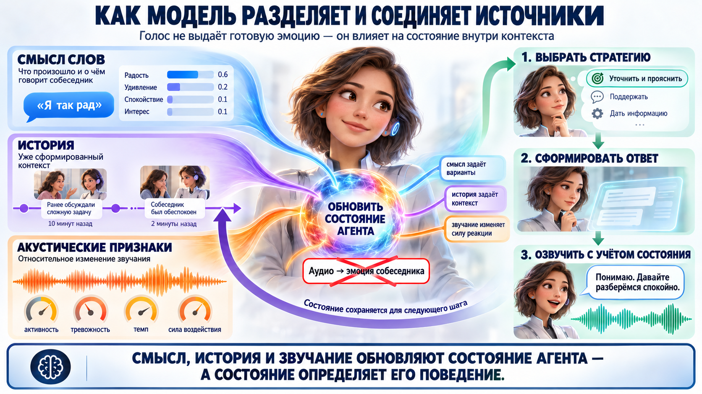
Смысл задаёт варианты, история сохраняет контекст, акустические признаки изменяют силу реакции. Вместе они обновляют состояние агента, а не классифицируют эмоцию собеседника.
Содержание реплики формирует распределение возможных эмоций, а не одну окончательную метку.
Предыдущее состояние агента хранит контекст уже произошедших событий и не обнуляется между репликами.
Относительные изменения активности, тревожности, темпа и силы воздействия становятся прото-эмоциями и корректируют состояние внутри текущего контекста.
Акустика не сообщает системе: «человек испытывает страх». Она сообщает, что по сравнению с текущей точкой отсчёта изменились определённые характеристики речи. Один и тот же набор прото-эмоциональных признаков в сцене пожара может усилить уже присутствующий страх, а на футбольном матче — радость и возбуждение.
Бизнесу предлагается не ещё один классификатор, который пишет в отчёте «клиент испытывал гнев с вероятностью 78%», а механизм, способный видеть траекторию взаимодействия, учитывать последствия предыдущих событий, менять стратегию в процессе разговора и проверять, привело ли действие системы к восстановлению.
Материалы для проверки постановки задачи: описание DUSHA, исследование неявной лингвистической информации в моделях распознавания эмоций по речи, репозитории GigaAM и Aniemore.
Задача. Не завершать обращение только потому, что последняя фраза клиента стала формально нейтральной. Агент должен учитывать всю траекторию разговора и проверить, действительно ли последствия конфликта ослабевают.
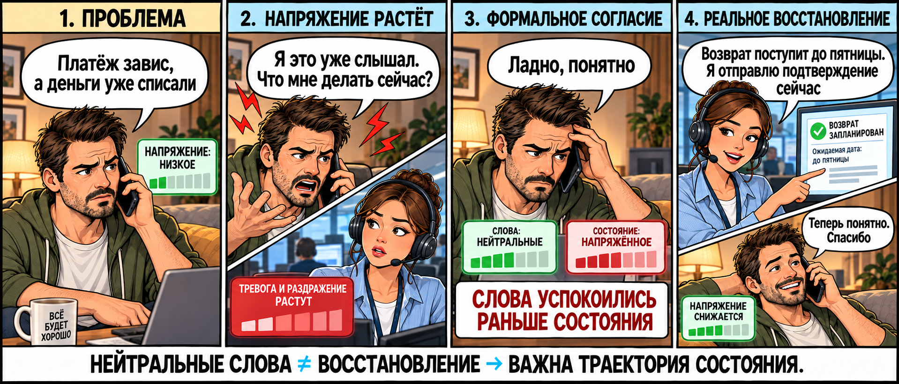
Нейтральные слова могут появиться раньше восстановления. Продукт продолжает сопровождение, если состояние агента ещё хранит последствия конфликта, а скорость, интенсивность и колебания тона не возвращаются к обычному уровню.
| Этап | Что учитывает система | Продуктовое действие |
|---|---|---|
| Клиент описывает проблему | Текст задаёт смысл события; акустика показывает скорость, интенсивность и изменение тона | Зафиксировать начальную точку траектории |
| Несколько неудачных объяснений | В состоянии агента накапливаются последствия повторных конфликтных событий | Сменить сценарий, темп или подключить оператора |
| Решение предложено | Слова стали нейтральными, но накопленное состояние ещё не восстановилось | Не завершать обращение преждевременно |
| Клиент понял решение | Последующие события устойчиво ослабляют прежнее состояние | Зафиксировать фактическую деэскалацию |
Метрики: время до деэскалации, максимальное отклонение состояния, остаточное состояние при завершении, доля эскалаций человеку и повторных обращений.
Задача. Различать случайную ошибку и накопившуюся фрустрацию. Последний неверный ответ сам по себе не показывает, что ученик несколько шагов подряд теряет уверенность.
Агент не упрощает задание после каждого промаха. Он замечает устойчивое накопление состояния, связанного с фрустрацией, вовремя помогает и проверяет, привела ли помощь к восстановлению.
Небольшое отклонение не требует немедленного упрощения.
Последствия накапливаются, возрастает риск отказа от задания.
Система проверяет, изменили ли следующие события состояние в сторону восстановления.
После успешного решения радость и уверенность также не обязаны исчезать мгновенно: тьютор может закрепить успех и только затем повысить сложность.
Продуктовый эффект: адаптация к траектории ученика вместо механической реакции на один ответ. Метрики: восстановление после ошибки, число шагов до отказа, эффект подсказки и удержание в задании.
Задача. Сделать последствия угроз, помощи и примирения частью сцены. Без состояния NPC после каждого события фактически начинает отношения заново.
Помощь после угрозы уменьшает последствия конфликта, но не стирает прошлое мгновенно. Следующая реакция NPC продолжает уже сложившуюся историю.
| Событие | Изменение состояния NPC | Наблюдаемое поведение |
|---|---|---|
| Игрок угрожает | Растут страх, раздражение или настороженность — в зависимости от характера и истории NPC | NPC увеличивает дистанцию и меньше доверяет |
| Игрок помогает | След предыдущего события уменьшается постепенно | Появляется осторожное сотрудничество |
| Угроза повторяется | Новое событие действует на сохранённое состояние | Реакция сильнее или восстановление медленнее |
| Происходит примирение | Состояние возвращается к характерному фону | Отношение меняется убедительно, а не переключателем |
Продуктовый эффект: один набор событий создаёт разные траектории у стоика, тревожного и вспыльчивого NPC без ручного написания каждой комбинации.
Задача. Сохранить ощущение продолжающегося собеседника, но не смешивать текущее настроение разговора с долговременным отношением.
Оперативное состояние меняется внутри диалога и постепенно затухает. Только значимые события отдельно влияют на долговременное отношение, поэтому случайная реакция не становится постоянной характеристикой пользователя.
След последних реплик: напряжение, радость, раздражение или восстановление. Оно быстро изменяется и постепенно затухает.
Доверие и значимые события между встречами. Это отдельный слой с собственной политикой записи и забывания.
Продуктовый эффект: персонаж сохраняет настроение внутри разговора и узнаваемое отношение между разговорами, не перенося краткую реакцию навсегда.
Задача. Проверять одну стратегию на разных типах собеседников, а не проходить единственный заранее написанный сценарий.
Одинаковое давление по-разному действует на стоика, импульсивного и тревожного собеседника. Тренажёр проверяет навык адаптации, а не запоминание одной ветки диалога.
| Профиль | Динамика после давления | Какой навык проверяется |
|---|---|---|
| Стоик | Слабо отклоняется и сохраняет позицию | Аргументация без опоры на эмоциональное давление |
| Импульсивный | Быстро вспыхивает, но способен быстро восстановиться | Деэскалация непосредственно в момент пика |
| Тревожный | Долго сохраняет ожидание угрозы | Последовательное восстановление безопасности и доверия |
Одинаковая реплика обучаемого запускает разные траектории, но профили остаются воспроизводимыми. Это позволяет сравнивать стратегии, а не случайные сценарные ветки.
Метрики: достигнутый пик, время восстановления, количество повторных эскалаций и устойчивость результатов при повторном прохождении.
Задача. Учитывать расхождение между словами и звучанием. Нейтральная фраза может сопровождаться ускоренной речью, короткими колебаниями тона или сильным отклонением интенсивности, но эти признаки сами по себе не сообщают, какую эмоцию испытывает человек.
Робот учитывает расхождение каналов и выбирает более осторожную реакцию, но не превращает скорость, интенсивность или изменение тона в эмоциональный диагноз.
Формирует text_emotions на смысловом уровне.
Описывают внимание, доминирование или волнение, нервозность, спокойствие, тревожность, усиление и интерес.
Определяет, какие уже активные компоненты могут быть усилены или ослаблены акустикой.
Продуктовый эффект: робот не игнорирует звучание и одновременно не выдаёт акустический паттерн за достоверно определённую эмоцию человека.
Бизнес настраивает наблюдаемое поведение роли, а не пытается вручную назначать эмоцию каждому звуку.
| Уровень | Что настраивается | Пример решения |
|---|---|---|
| Роль | Характер и естественный эмоциональный фон | Спокойный помощник или тревожный NPC |
| Динамика | Восприимчивость, память, вариативность и восстановление | Долго помнить страх, но быстро терять раздражение |
| Сценарий | Допустимые реакции и правила эскалации | Поддержка замечает конфликтный смысл, но не копирует раздражение клиента |
| Эксплуатация | Границы состояния, время жизни и изоляция диалогов | Новый клиент не наследует состояние предыдущего |
| Метрика | Проверяемый вопрос | Где особенно важна |
|---|---|---|
| Непрерывность | Сохраняются ли последствия между шагами? | NPC, companion |
| Время восстановления | Как быстро состояние возвращается к фону? | Поддержка, переговоры |
| Деэскалация | Изменилось ли состояние агента после выбранного действия? | Колл-центр, обучение |
| Различимость персонажей | Дают ли профили разные траектории на одном сценарии? | Игры, тренажёры |
| Управляемость | Предсказуемо ли меняется динамика при настройке? | Все сценарии |
| Изоляция и границы | Нет ли переноса между пользователями и неконтролируемого накопления? | Все продукты |
Начать можно с аналитики траектории, затем подключить адаптацию диалога и только после этого перейти к полноценной роли с характером, состоянием и памятью.
Состояние рассчитывается для наблюдения и метрик, но пока не меняет поведение.
Состояние выбирает следующую стратегию в заранее заданных безопасных границах.
Характер, оперативное состояние и отдельная долговременная память формируют устойчивую роль.
text_emotions и прото-эмоции, применять акустическое влияние только через состояние, существовавшее в момент сигнала, хранить состояние по диалогу и контролировать затухание.Инженерная задача состоит не в выборе одной метки эмоции, а в согласованном обновлении N-мерного состояния. Первый слой объединяет text_emotions, реакцию агента и память. Второй применяет акустическое влияние через состояние, существовавшее до события, и объединяет результат с характером.
Все компоненты системы используют единый упорядоченный набор эмоций EMOTION_SPACE. Для каждой эмоции хранится отдельная интенсивность, поэтому состояние является полным многомерным вектором:
current_state ∈ ℝ|EMOTION_SPACE|Количество эмоций выбирается при проектировании системы. Важно не конкретное число, а единая семантика координат: одна и та же позиция во всех векторах верхнего уровня должна обозначать одну и ту же эмоцию.
| Имя | Определение |
|---|---|
EMOTION_SPACE | Единый набор эмоциональных координат верхнего уровня. |
text_emotions | Эмоциональный вектор, распознанный в тексте собеседника. |
Fθ | Обучаемый экстрактор абсолютных акустических величин, одинаково применяемый к аудио собеседника и агента. |
Xother, Xagent | Абсолютные акустические признаки текущей речи собеседника и предыдущей речи агента. |
ΔX, s | Разность признаков «собеседник минус агент» и её знаковая нормированная оценка по фиксированному профилю агента. |
PROTO_EMOTION_SPACE | Минимальный набор относительных признаков: activity, anxiety и tempo. Коэффициент deviation отдельно задаёт силу воздействия. |
proto_emotions | Вектор нормированных относительных оценок s. Это не классификация эмоций верхнего уровня. |
M | Матрица влияния относительных признаков на координаты EMOTION_SPACE. |
Aproto | Знаковая акустическая коррекция после суммирования признаков, масштабирования через deviation и применения к previous_state; в исходной реализации — other_emotions_s. |
response_emotions | Эмоциональный смысл уже сформированного ответа агента. |
character_baseline | Базовый профиль эмоциональных склонностей персонажа. |
previous_state | Сохранённый current_state, существовавший непосредственно перед текущим событием. Для акустического канала это контекст, в котором возник звук. |
semantic_state | Промежуточное состояние после текстового слоя. |
current_state | Итоговое состояние текущего шага. |
Акустический канал не решает задачу классификации эмоций. Его задача — измерить абсолютные физические параметры двух аудиосигналов, вычислить их относительное различие и использовать его как корректирующий сигнал для уже существующего эмоционального состояния агента.
Aothert → Fθ → XothertAagentt−1 → Fθ → Xagentt−1Fθ — обучаемый экстрактор акустических признаков, который в рабочей системе заменяет Praat. Он возвращает абсолютные величины, а не метки fear, joy, anger или другие эмоции верхнего уровня. Один и тот же экстрактор обязательно применяется к голосу собеседника и к голосу агента.
На первом шаге у агента ещё нет предыдущей сгенерированной реплики. Поэтому система использует нейтральный аудиошаблон его голоса:
Xagent0 = Fθ(Aneutralagent)Для следующих шагов точкой отсчёта становится не абстрактная «средняя человеческая речь» и не целевое состояние синтезатора, а признаки реально сгенерированного агентом аудио на предыдущем шаге. Таким образом, акустический bias агента смещается вместе с его фактической речью.
| Результирующий показатель | Из каких абсолютных измерений получается | Роль в модели |
|---|---|---|
activity | Значение F0/pitch и наклон его контура. Значение и slope не дублируют друг друга: первое описывает уровень, второе — направление изменения во времени. | Знаковый признак активности. |
anxiety | Осцилляция F0/pitch относительно речи агента. | Знаковый признак тревожности или спокойствия. |
tempo | Эффективная скорость речи, рассчитанная по полной длительности реплики. Паузы уже входят в этот показатель и отдельно не дублируются. | Знаковый признак ускорения или замедления. |
deviation | Значение амплитуды или энергии и наклон её изменения. | Не выбирает эмоцию, а масштабирует силу совокупного акустического воздействия. |
Форманты, тембр и другие характеристики могут быть добавлены позднее, но не входят в минимальную реализацию. В ней остаются три направленных признака — activity, anxiety, tempo — и один коэффициент выраженности deviation.
Для каждого направленного признака j сначала вычисляется разность между собеседником и агентом:
ΔXt,j = Xothert,j − Xagentt−1,jЗнак показывает направление изменения относительно акустического состояния агента, модуль — величину расхождения. Нулевой результат означает, что по данному показателю речь собеседника не требует изменения состояния агента.
Диапазоны ΔXmin,j и ΔXmax,j заранее получают из набора аудиошаблонов агента либо загружают из готового профиля. Они не расширяются текущим входным сигналом:
st,j = { ΔXt,j / ΔXmax,j, если ΔXt,j ≥ 0; ΔXt,j / |ΔXmin,j|, если ΔXt,j < 0 }Обычный диапазон st,j находится около [−1; 1], однако значение может выйти за эти границы, если входная реакция сильнее диапазона шаблонов. Это осознанная часть модели: текущая реплика не должна автоматически переопределять калибровку агента.
Тем же способом из относительных амплитудно-энергетических измерений получается неотрицательный коэффициент deviationt. Например, вклад признака 0,4 при deviation = 0,8 превращается во вклад 0,32.
Таблица не распознаёт эмоцию собеседника. Она описывает, в каком направлении каждый частичный акустический признак может корректировать уже активную координату состояния агента. Отдельный признак не является достаточным условием эмоции: итог определяется суммой всех признаков и текущим previous_state.
| Эмоция верхнего уровня | activity | anxiety | tempo |
|---|---|---|---|
disappointment / разочарование | − | 0 | 0 |
sadness / грусть | − | 0 | − |
annoyance / раздражение | + | + | + |
neutral / нейтральное состояние | 0 | 0 | 0 |
disapproval / неодобрение | − | 0 | ± |
realization / осознание | 0 | − | − |
nervousness / нервозность | + | + | + |
approval / одобрение | 0 | − | − |
joy / радость | + | ± | + |
anger / гнев | + | + | + |
embarrassment / смущение | ± | + | ± |
caring / забота | ± | − | ± |
remorse / раскаяние | − | 0 | − |
disgust / отвращение | − | 0 | ± |
grief / горе | − | 0 | − |
confusion / замешательство | ± | + | ± |
relief / облегчение | − | − | − |
desire / желание | + | ± | ± |
admiration / восхищение | + | − | 0 |
optimism / оптимизм | + | − | 0 |
fear / страх | + | + | + |
love / любовь | + | ± | ± |
excitement / волнение, восторг | + | ± | + |
curiosity / любопытство | + | ± | + |
amusement / веселье | + | 0 | 0 |
surprise / удивление | + | ± | + |
gratitude / благодарность | 0 | − | 0 |
pride / гордость | + | 0 | 0 |
Обозначения: «+» — положительное значение признака усиливает координату, отрицательное подавляет; «−» — отрицательное значение усиливает координату, положительное подавляет; «0» — признак не участвует; «±» — материалы допускают оба варианта, поэтому знак нельзя назначить только по этому признаку. В числовой матрице такие позиции требуют отдельной калибровки и не должны произвольно превращаться в +1 или −1. Для neutral все акустические коэффициенты равны нулю.
После замены символов «+», «−» и «0» настроенными числовыми коэффициентами получается матрица M размерности «акустические признаки × эмоции». Для каждой эмоциональной координаты k сначала суммируются частичные влияния:
pt,k = Σj Mj,k st,jРазные признаки могут усиливать друг друга, взаимно компенсироваться или давать нулевой результат. Затем совокупное влияние масштабируется выраженностью акустического отклонения и скоростью адаптации η, после чего применяется только к состоянию, существовавшему до текущего события:
Aprotot,k = η × deviationt × previous_statet−1,k × pt,kAprotot — это готовая знаковая акустическая коррекция для второго рекуррентного слоя. В терминах исходной реализации она передаётся как other_emotions_s. Это не распознанная эмоция собеседника.
previous_state.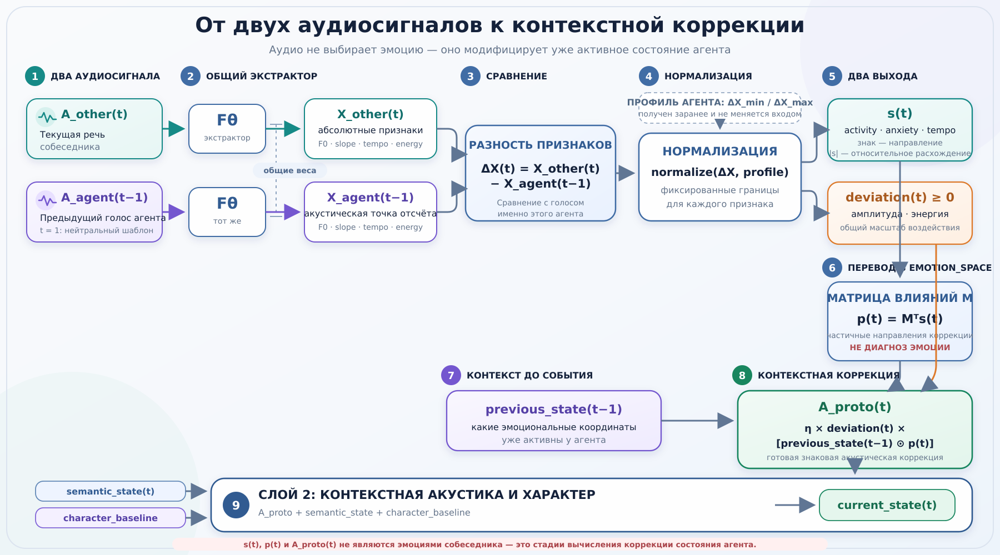
Как читать: один и тот же Fθ независимо извлекает абсолютные признаки текущей речи собеседника и предыдущего голоса агента. После вычитания и нормализации по фиксированному профилю направленный вектор st преобразуется матрицей M, а deviationt задаёт общий масштаб. previous_statet−1 покоординатно фильтрует результат, формируя Aprotot — акустический вход второго рекуррентного слоя.
pt, ни максимальную акустическую коррекцию нельзя объявлять эмоцией собеседника. Эти величины описывают только направление изменения состояния агента.После вычисления current_statet система при необходимости синтезирует голос агента. Из реально полученного аудио снова извлекаются абсолютные признаки:
Aagentt = TTS(responset, current_statet)Xagentt = Fθ(Aagentt)На следующем шаге именно Xagentt становится новой акустической точкой отсчёта. Благодаря этому петля учитывает фактический результат синтеза, даже если TTS воспроизвёл заданное состояние не идеально.
current_statet на том же шаге. Оно обновляет только акустическую точку отсчёта для шага t + 1. Само состояние уже было вычислено рекуррентной формулой.A_other → абсолютные признаки собеседника → разность с признаками предыдущего голоса агента → нормированные относительные оценки → таблица влияния → контекстная коррекция → новое эмоциональное состояние → TTS → абсолютные признаки нового голоса агента.character_baseline используется как готовый входной вектор.Рекомендуемый контракт входов — независимые активации в диапазоне от 0 до 1:
vectori ≤ 1Сумма координат не обязана равняться единице: несколько эмоций могут быть активны одновременно. Все анализаторы должны быть откалиброваны в сопоставимом масштабе.
| Запись | Смысл |
|---|---|
scalar × vector | Каждая координата вектора умножается на одно число. |
vector₁ ⊙ vector₂ | Покоординатное умножение векторов одинаковой размерности. Именно оно ограничивает аудиовлияние текущим контекстом. |
vector₁ + vector₂ | Покоординатное сложение. Скалярное произведение не используется. |
Индекс t обозначает событие обновления. До начала расчёта система фиксирует previous_statet−1 — состояние, существовавшее в момент поступления сигнала. Выбранная гранулярность должна быть единой для вычисления, хранения и тестирования.
Для каждой эмоции i сначала независимо выбирается случайный множитель:
random_factori ∼ U(1 − variability_range, 1 + variability_range)Затем значение этой эмоциональной координаты вычисляется как взвешенная сумма трёх источников:
emotion_valuei = layer_gain × [external_weight × external_emotionsi + random_factori × modulated_emotionsi + previous_weight × previous_emotionsi]random_factor создаётся отдельно для каждой эмоции. Поэтому вариативность слегка меняет форму всего профиля, а не умножает весь вектор на одно случайное число.
| Параметр | Инженерный смысл |
|---|---|
external_weight | Восприимчивость слоя к внешнему сигналу: смыслу слов или акустике. |
variability_range | Допустимый диапазон случайного отклонения второго входа слоя. |
previous_weight | Сила переноса предыдущего состояния в текущий расчёт. |
layer_gain | Общий масштаб результата слоя; также влияет на рекуррентную динамику. |
semantic_statet = semantic_gain × [text_weight × text_emotionst + response_random_factort ⊙ response_emotionst + previous_state_weight × previous_statet−1]Первый слой объединяет эмоциональный смысл текста собеседника, эмоциональный смысл собственного ответа и состояние агента, существовавшее до текущего события.
current_statet = state_gain × [audio_weight × Aprotot + character_random_factort ⊙ character_baseline + semantic_state_weight × semantic_statet]Второй слой получает уже подготовленную коррекцию Aprotot = η × deviationt × (previous_statet−1 ⊙ MTst). Поэтому акустика может изменить силу уже активных эмоций, но не создаёт новую смысловую координату при нулевом контексте.
Рекуррентная модель использует принцип, концептуально близкий к перцептивному циклу Ульрика Найссера: новая информация обрабатывается не изолированно, а с учётом состояния, сформированного предыдущими взаимодействиями.
В первом слое смысл текущего сообщения, смысл ответа агента и сохранённое эмоциональное состояние формируют промежуточное semantic_state. Во втором слое акустические признаки действуют не как самостоятельные эмоциональные классы, а как контекстно-зависимая коррекция.
Покоординатное умножение на previous_state означает, что один и тот же акустический сигнал может по-разному изменять эмоциональные компоненты в зависимости от состояния до события. Полученное current_state становится previous_state следующего шага. Поэтому новые сигналы воздействуют на историю предшествующих реакций, а не на каждый раз заново создаваемое нейтральное состояние.
Это реализует рекуррентную зависимость эмоциональной реакции от истории восприятия, но не является полной реализацией перцептивного цикла Найссера: здесь нет отдельного механизма активного исследования среды и явного сопоставления гипотез о внешнем мире с наблюдениями. Также следует различать общий принцип многомодального восприятия и данную реализацию: смысловой и акустический каналы участвуют в обновлении эмоционального состояния, тогда как самостоятельный канал визуальных признаков в текущей версии не предусмотрен.
| Параметр слоя | Что регулирует |
|---|---|
text_weight | Влияние эмоционального содержания текста собеседника. |
response_variability_range | Диапазон случайного изменения вклада response_emotions. |
previous_state_weight | Перенос эмоциональной памяти в текстовый слой. |
semantic_gain | Общий масштаб результата первого слоя. |
audio_weight | Сила контекстной акустической модификации. |
character_variability_range | Диапазон случайного изменения проявления характера. |
semantic_state_weight | Перенос результата первого слоя в итоговое состояние. |
state_gain | Общий масштаб итогового слоя. |
response_random_factort,i ∼ U(1 − response_variability_range, 1 + response_variability_range)character_random_factort,i ∼ U(1 − character_variability_range, 1 + character_variability_range)Новый множитель генерируется на каждом шаге t, для каждой эмоции i и отдельно для каждого слоя. По умолчанию выборки независимы.
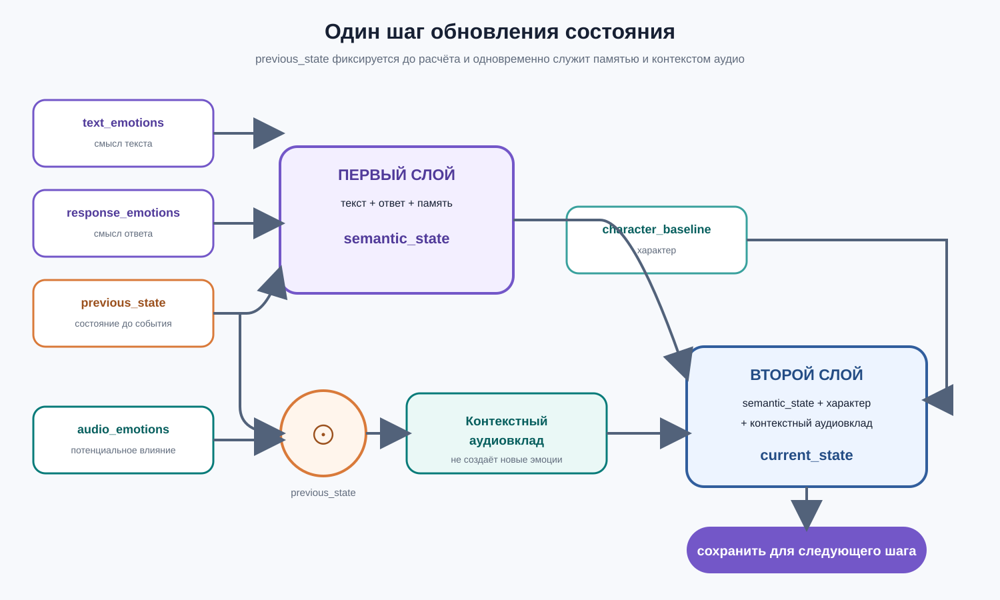
Как читать: text_emotions, ответ и память формируют semantic_state. Во втором слое готовая контекстная коррекция Aproto объединяется с характером и semantic_state.
Рассмотрим один шаг для пространства из трёх эмоций:
EMOTION_SPACE = [joy, anger, fear]| Вектор | joy | anger | fear |
|---|---|---|---|
text_emotions | 0,10 | 0,80 | 0,20 |
response_emotions | 0,20 | 0,40 | 0,10 |
previous_state | 0,40 | 0,30 | 0,20 |
Aproto, готовая акустическая коррекция | 0,02 | 0,27 | 0,06 |
character_baseline | 0,50 | 0,15 | 0,35 |
Числа Aproto здесь нужны только для проверки рекуррентного вычисления. Они считаются по относительным признакам, матрице влияния, deviation, η и previous_state; это не оценки эмоций собеседника по звуку.
Зададим text_weight = 0,5, previous_state_weight = 0,6, semantic_gain = 0,8 и зафиксируем случайные множители:
response_random_factor = [1,05; 0,95; 1,00]semantic_statejoy = 0,8 × (0,5 × 0,10 + 1,05 × 0,20 + 0,6 × 0,40) = 0,400semantic_stateanger = 0,8 × (0,5 × 0,80 + 0,95 × 0,40 + 0,6 × 0,30) = 0,768semantic_statefear = 0,8 × (0,5 × 0,20 + 1,00 × 0,10 + 0,6 × 0,20) = 0,256semantic_state = [0,400; 0,768; 0,256]Зададим audio_weight = 0,4, semantic_state_weight = 0,7, state_gain = 0,9 и зафиксируем:
character_random_factor = [1,00; 1,10; 0,90]current_statejoy = 0,9 × (0,4 × 0,02 + 1,00 × 0,50 + 0,7 × 0,400) = 0,709current_stateanger = 0,9 × (0,4 × 0,27 + 1,10 × 0,15 + 0,7 × 0,768) = 0,730current_statefear = 0,9 × (0,4 × 0,06 + 0,90 × 0,35 + 0,7 × 0,256) = 0,466current_state = [0,709; 0,730; 0,466]Aproto уже содержит контекстное умножение на previous_state. Второй слой не должен выполнять его повторно.После раскрытия двух слоёв итог читается как сумма пяти компонентов. Главное отличие — аудиовклад зависит от состояния до события:
current_statet = audio_contributiont + character_contributiont + text_contributiont + response_contributiont + memory_contributiont| Вклад | Полная формула | Смысл |
|---|---|---|
audio_contributiont | state_gain × audio_weight × Aprotot | Акустическая коррекция уже включает η × deviation × previous_state ⊙ MTs. |
character_contributiont | state_gain × character_random_factort ⊙ character_baseline | Характер входит непосредственно в итоговый слой. |
text_contributiont | state_gain × semantic_state_weight × semantic_gain × text_weight × text_emotionst | Эмоциональный смысл текста проходит через оба слоя. |
response_contributiont | state_gain × semantic_state_weight × semantic_gain × response_random_factort ⊙ response_emotionst | Эмоциональный смысл ответа проходит через оба слоя. |
memory_contributiont | state_gain × semantic_state_weight × semantic_gain × previous_state_weight × previous_statet−1 | Память переносит прошлое состояние через первый и второй слои. |
previous_state участвует двумя различными путями: линейно сохраняет эмоциональную память и покоординатно задаёт контекст для акустической модификации. Эти роли нельзя объединять в один коэффициент.
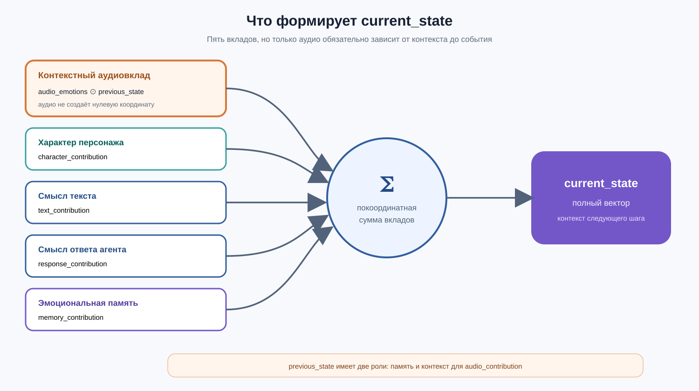
current_stateТекст, ответ и память проходят через первый слой. Аудио сначала ограничивается previous_state; только полученный контекстный вклад поступает во второй слой.
response_emotions. В однопроходном режиме ответ сначала формируется, затем его смысл обновляет состояние для следующего шага. Он не может изменить уже созданный ответ. Влияние нового состояния на ту же реплику требует отдельной двухпроходной генерации.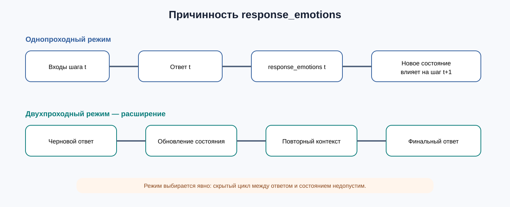
Режим выбирается явно, чтобы избежать скрытого цикла «ответ зависит от состояния, состояние зависит от ответа».
Прочитать сохранённый current_state и использовать его как previous_state всего текущего обновления.
Распознать text_emotions. Одним экстрактором получить абсолютные признаки текущей речи собеседника и предыдущей речи агента.
Найти ΔX = Xother − Xagent, нормализовать его по фиксированным границам агента и получить s и deviation.
Получить ответ агента и определить response_emotions.
Объединить text_emotions, response_emotions и previous_state в semantic_state.
Вычислить Aproto = η × deviation × (previous_state ⊙ MTs) и передать коррекцию во второй слой вместе с характером и semantic_state.
Применить constrain, сохранить новый current_state и передать его потребителям.
Если ответ озвучен, извлечь признаки реально сгенерированного аудио и сохранить их как Xagentt для следующего события.
EMOTION_SPACEЕдиный упорядоченный набор из N эмоциональных координат.external_emotionsПолный N-мерный внешний вектор слоя. В первом слое это text_emotions; во втором — заранее вычисленный Aproto.modulated_emotionsВектор с покоординатной вариативностью: response_emotions в первом слое или character_baseline во втором.previous_emotionsprevious_state для первого слоя или semantic_state для второго.rngГенератор случайных множителей; при тестировании его начальное состояние фиксируется.constrainФункция, определяющая допустимую область итоговых активаций.Перед вычислением проверяются два разных пространства:
proto_emotions) = [activity, anxiety, tempo]text_emotions) = coordinates(Aproto) = coordinates(response_emotions) = coordinates(character_baseline) = coordinates(previous_state) = EMOTION_SPACEАкустический адаптер переводит относительные оценки через матрицу M и previous_state в готовую коррекцию Aproto. Именно этот N-мерный вектор получает базовая операция смешения во втором слое.
| Часть контракта | Содержимое |
|---|---|
| Входные данные | text_emotions, аудио собеседника, сохранённые признаки предыдущего аудио агента, response_emotions, character_baseline и снимок previous_state. |
| Параметры | Два независимых набора весов, фиксированные границы акустического профиля, матрица M, скорость адаптации η и политика ограничения. |
| Служебные данные | Номер или время шага, маски доступности каналов и источник случайности. |
| Результат | current_state в пространстве EMOTION_SPACE после применения constrain. |
| Сохраняемые данные | Состояние, признаки последнего реально сгенерированного аудио агента, идентификаторы агента и диалога, шаг, время, версии экстрактора и параметров, состояние генератора случайности. |
current_state как неизменяемый previous_state текущего шага.text_emotions, response_emotions, character_baseline и previous_state к EMOTION_SPACE.Fθ извлечь Xothert из аудио собеседника и прочитать сохранённое Xagentt−1. При первом событии использовать признаки нейтрального шаблона агента.ΔX, нормированные activity, anxiety, tempo и коэффициент deviation. Не изменять границы профиля текущим входом.M получить p = MTs, затем вычислить Aproto = η × deviation × (previous_state ⊙ p). Не заменять previous_state уже обновлённым состоянием того же шага.response_random_factor и вычислить semantic_state.character_random_factor и вычислить current_state, используя Aproto.constrain и сохранить результат как состояние следующего шага.Aagentt, извлечь Xagentt и сохранить признаки только для сравнения на следующем шаге.text_emotions, характер, ответ и память продолжают участвовать в расчёте.Единое пространство эмоций, два слоя, контекстное акустическое влияние, характер, предыдущее состояние и покоординатная вариативность.
constrain, маски доступности, затухание по физическому времени, параметры отдельных эмоций, воспроизводимая случайность и долговременное хранение.
Расширения не меняют смысл ядра, но делают реализацию устойчивой к пропущенным данным, длительным паузам и эксплуатационным ограничениям.
current_stateИсходная формула не гарантирует, что координаты останутся вероятностями. Они могут превысить 1, а при некоторых параметрах — выйти за допустимый диапазон. Нужно заранее определить семантику состояния.
Хранить неотрицательные независимые значения и нормализовать только для конкретного потребителя.
Применить softmax или нормировку суммы. Координаты начнут конкурировать: усиление одной уменьшит остальные.
Применить sigmoid или clipping в [0,1], сохранив возможность одновременно активировать несколько эмоций.
variability_range также должен иметь допустимый диапазон. При значении от 0 до 1 random_factor остаётся неотрицательным. Если диапазон больше 1, вклад отдельной эмоции может случайно изменить знак.
В базовой модели один набор параметров применяется ко всему слою. Более выразительное расширение задаёт отдельную настройку для каждой эмоции:
emotion_valuei = layer_gaini × [external_weighti × external_emotionsi + random_factori × modulated_emotionsi + previous_weighti × previous_emotionsi]| Эмоция | external_weight | variability_range | previous_weight | layer_gain | Интерпретация |
|---|---|---|---|---|---|
| Joy | 0,4 | 0,1 | 0,7 | 1,0 | Умеренно воспринимает радость и довольно долго её сохраняет. |
| Anger | 0,8 | 0,2 | 0,4 | 1,0 | Реагирует на агрессию, но сравнительно быстро восстанавливается. |
| Fear | 0,7 | 0,2 | 0,9 | 1,0 | Тревожные сигналы имеют длительное последействие. |
| Sadness | 0,3 | 0,1 | 0,8 | 1,0 | Слабо заражается грустью, но возникшее состояние сохраняется. |
Эмоциональный вектор должен принадлежать конкретной паре «персонаж — диалог» или «персонаж — отношение», а не быть глобальной переменной модели. Минимальная запись состояния:
EmotionalState {
agent_id
conversation_id
vector[N]
agent_acoustic_features
acoustic_profile_version
feature_extractor_version
updated_at
model_version
step_index
random_seed
}
Состояние должно принадлежать паре «agent_id — conversation_id»: глобальный вектор привёл бы к переносу эмоций между пользователями. Вместе с ним сохраняются признаки последней реально озвученной реплики агента. Частота сохранения должна совпадать с выбранной гранулярностью шага обновления.
Если у диалога ещё нет сохранённой истории, начальное состояние рекомендуется приравнять к характеру:
previous_state0 = character_baselineТак персонаж начинает взаимодействие из естественного для него эмоционального фона. Нейтральный вектор, восстановление состояния сессии или загрузка долговременной памяти допустимы как отдельные явно заданные политики.
agent_acoustic_features0 = Fθ(neutral_agent_audio)Эмоциональная и акустическая инициализация различаются: previous_state0 задаёт исходный эмоциональный контекст, а нейтральный аудиошаблон — исходную точку отсчёта для относительных признаков.
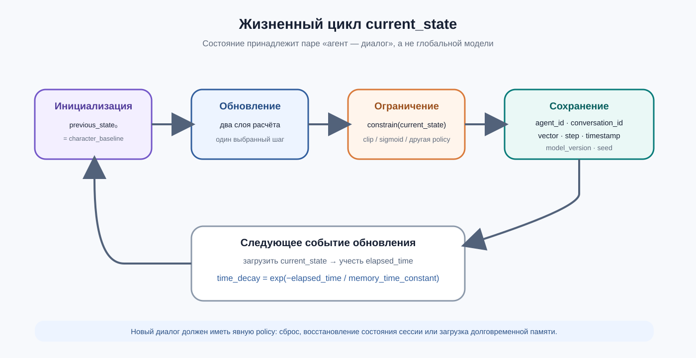
initial_state до следующего событияИнженерное решение: отдельно зафиксируйте инициализацию, гранулярность шага, функцию ограничения, формат хранения и политику восстановления после паузы.
Для каждого необязательного канала нужна маска доступности. Для аудио:
audio_contribution = audio_available × state_gain × audio_weight × Aprotoaudio_available равен 0 или 1. При отсутствии аудио исчезает только акустическая модификация, а не эмоциональное состояние.
audio_contribution = 0; продолжить использовать text_emotions, response_emotions, character_baseline и память.Xagent либо нейтральный шаблон, если озвученных реплик ещё не было.text_emotions. Аудио не получает права создавать новый эмоциональный класс: оно по-прежнему ограничено previous_state.previous_state даёт нулевой акустический вклад в эту координату.Простой вариант непрерывного затухания:
time_decay = exp(−elapsed_time / memory_time_constant)memory_time_constant задаёт характерное время сохранения следа. После применения затухания полученное состояние становится previous_state и контекстом для аудио нового события.
EMOTION_SPACE; proto_emotions отдельно использует PROTO_EMOTION_SPACE.Fθ возвращает абсолютные физические величины и не обучается предсказывать классы эмоций.ΔXmin и ΔXmax; поэтому выход за диапазон шаблонов может дать модуль оценки выше 1.deviation масштабирует совокупное влияние, но не выбирает эмоциональную координату.Aproto является коррекцией состояния агента, а не распознанным состоянием собеседника.Aproto используется снимок previous_state, сделанный до обновления.constrain.M и генератор случайных чисел.Двухслойность и конкретные веса являются архитектурой данной модели. Их качество проверяется на целевых сценариях, но проверка не должна возвращать аудиоканалу запрещённую роль классификатора эмоций.
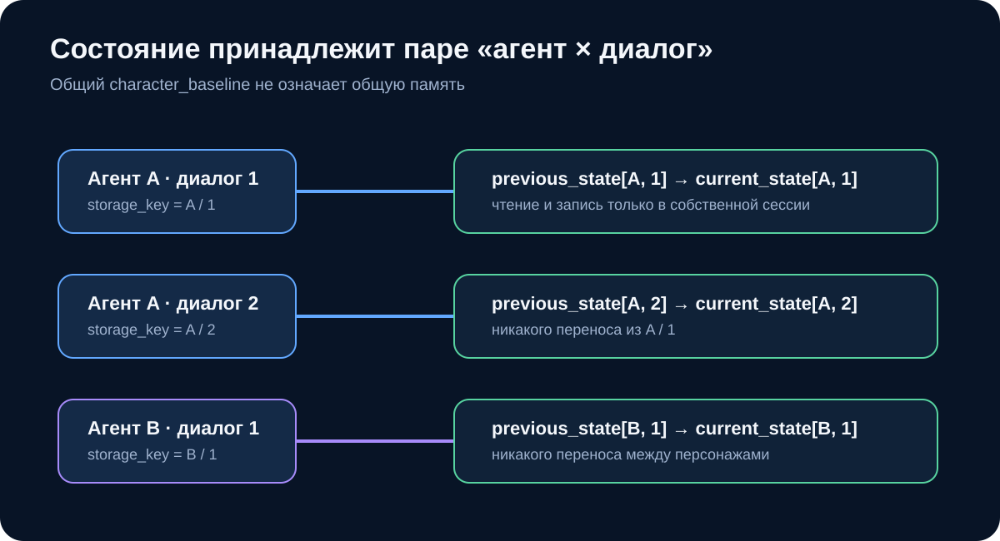
Каждая сессия читает и записывает только собственный previous_state; общий профиль характера не превращает состояния разных диалогов в общую память.
external_weight = 0 соответствующий внешний сигнал не влияет на слой.previous_weight = 0 линейный перенос прошлого состояния отсутствует; отдельная контекстная роль previous_state в аудиоканале проверяется независимо.variability_range = 0 повторные вычисления полностью детерминированы.layer_gain = 0 результат слоя равен нулевому вектору.[0,709; 0,730; 0,466] с учётом точности округления.ΔX в пределах допуска.Xagent даёт разные относительные оценки.|s| > 1, но не изменяет сохранённые границы ΔXmin и ΔXmax.s или нулевой deviation даёт нулевой Aproto.neutral равны нулю, поэтому акустическая ветвь её непосредственно не изменяет.previous_state равна нулю, аудио не создаёт её независимо от относительных признаков.previous_state даёт разные Aproto.p или Aproto как эмоцию собеседника.current_statet, а только задаёт Xagentt для шага t + 1.text_emotions + response_emotions + previous_state → первый слой → semantic_stateAother, Aagent → Fθ → ΔX → s, deviation → M → AprotoAproto + character_baseline + semantic_state → второй слой → constrain → current_statecurrent_state → TTS → новое Aagent → новое Xagent для следующего шага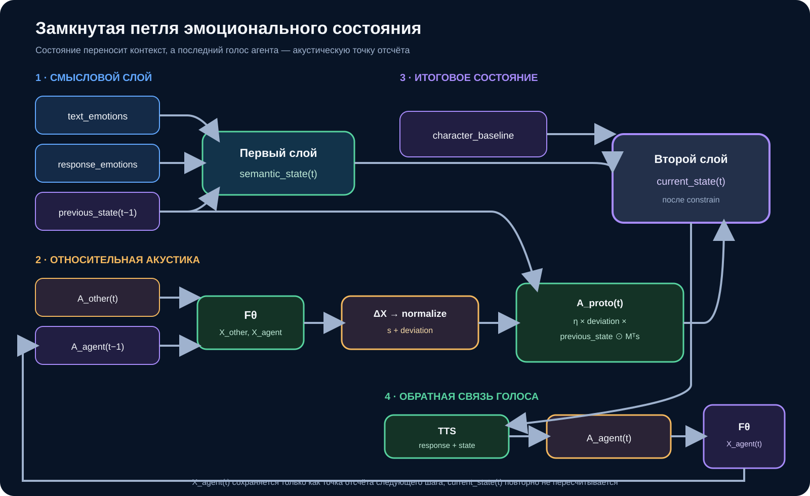
Текст формирует text_emotions. Акустика сравнивается с последним голосом агента, превращается в контекстную коррекцию, а реально сгенерированный новый голос задаёт точку отсчёта следующего шага.
current_state переносит эмоциональный контекст, а Xagent переносит фактическую акустическую точку отсчёта. Характер остаётся фиксированным глобальным bias и сдерживает динамику состояния.Другие подсистемы могут читать current_state через отдельный интерфейс. Если состояние используется для озвучивания ответа, акустический экстрактор обязан вернуть измерения сгенерированной реплики в петлю, но не должен повторно менять состояние того же шага.
Модель охватывает формирование эмоционального состояния, относительную акустическую коррекцию, обратную связь через TTS, ограничение и хранение. Конкретная архитектура Fθ, способ синтеза речи и калибровка числовых коэффициентов M остаются отдельными задачами реализации.